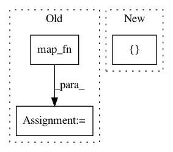

7477c98d5915e679f86b0fc18a443f51724a9fd8,trainer.py,Trainer,build_model,#Trainer#,278
Before Change
return np.float32(scipy.misc.imrotate(image, angle, "bicubic"))/255
if self.config.input_scale_size == 108:
C_input = tf.map_fn(lambda img: tf.py_func(random_rotate_image, [img], tf.float32), self.x)
C_input = tf.random_crop(C_input, [int(self.x.shape[0]),96,96, 3])
C_input = tf.map_fn(lambda img: tf.image.random_flip_left_right(img), C_input)
elif self.config.input_scale_size == 64:
C_input = tf.image.resize_bilinear (self.x,[96,96])
C_input = tf.map_fn(lambda frame: tf.image.per_image_standardization(frame), C_input)
C = ModuleC(self.config)
After Change
self.x_all.append(x)
if self.config.input_scale_size == 108:
C_input = image.rotate(self.x,tf.random_uniform([int(self.x.shape[0])], minval=-0.174533, maxval=0.174533),"BILINEAR")
C_input = tf.random_crop(C_input, [int(self.x.shape[0]),96,96, 3])
elif self.config.input_scale_size == 64:
C_input = tf.image.resize_bilinear (self.x,[96,96])
In pattern: SUPERPATTERN
Frequency: 3
Non-data size: 3
Instances
Project Name: barisgecer/facegan
Commit Name: 7477c98d5915e679f86b0fc18a443f51724a9fd8
Time: 2018-02-19
Author: b.gecer@imperial.ac.uk
File Name: trainer.py
Class Name: Trainer
Method Name: build_model
Project Name: tensorflow/cleverhans
Commit Name: 06e9e1f8737c47869ae092c0e769f1e754d4de61
Time: 2018-10-03
Author: windqaq@gmail.com
File Name: cleverhans/picklable_model.py
Class Name: PerImageStandardize
Method Name: fprop
Project Name: OpenNMT/OpenNMT-tf
Commit Name: 8eff453c5032faea52c82edd2365371a42643687
Time: 2018-03-27
Author: guillaume.klein@systrangroup.com
File Name: opennmt/layers/transformer.py
Class Name:
Method Name: build_future_mask